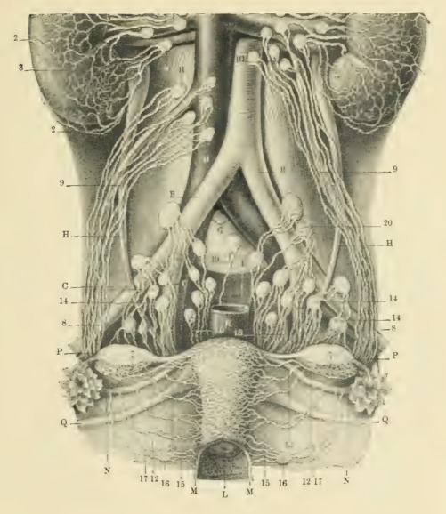

Página 10 · Parte C · Nervos e linfa
Linfonodos: o mapa de drenagem por região
- para-aórticos drenam o quê;
- ilíacos;
- sacrais e o porquê espacial;
- inguinais e a ponte com úlcera genital.
Linfonodos caem em associação, não em lista solta
Depois de artérias e veias, o mapa se completa com vasos linfáticos / linfonodos pélvicos. Peso de prova declarado: não caem tanto como pergunta isolada; caem mais em associação clínica. Os linfonodos se dividem por regiões de drenagem.
Para-aórticos e ilíacos
- Para-aórticos: drenam fundo uterino e ovários.
- Ilíacos (comuns, internos e externos): drenam colo, vagina média e uretra.
Sacrais e o sentido espacial
- Sacrais: drenam colo e vagina posterior.
Mnemônico topográfico: sacro é posterior → drenagem da vagina posterior faz sentido espacial.
Inguinais: vulva, períneo, vagina inferior
- Inguinais (superficiais e profundos): drenam vulva, períneo e vagina inferior.
Associação clínica: em úlceras genitais / IST, o surgimento de linfonodos inguinais é manifestação correlata (não reabrir o módulo de úlceras — só o endereço).
| Estação | Drena |
|---|---|
| Para-aórticos | Fundo uterino, ovários |
| Ilíacos (comum/int/ext) | Colo, vagina média, uretra |
| Sacrais | Colo, vagina posterior |
| Inguinais (sup/prof) | Vulva, períneo, vagina inferior |

Atlas obstétrico histórico: linfáticos das vísceras pélvicas e abdome.
Fig. 23 — Lymphatics of the pelvic viscera and abdomen. From Barton Cooke Hirst, A Text-Book of Obstetrics (1898). Public domain. Source: https://commons.wikimedia.org/wiki/File:Hirst-1898-Obstetrics-fig023-Lymphatics-of-the-pelvic-viscera-and-abdomen-A-Aorta.jpg
Quiz — fixação
Tumor do fundo uterino e do ovário drena preferencialmente para:
- Gabarito B. Fundo uterino e ovário drenam para os linfonodos para-aórticos.
- (A) inguinais drenam vulva/períneo/vagina inferior, não fundo/ovário.
- (C) sacrais drenam colo e vagina posterior, não fundo/ovário.
- (D) epigástricos superficiais não são a estação principal do fundo/ovário.
- Por que cair em A: “região genital” sugere inguinais, mas fundo e ovário sobem para para-aórticos.
Vulva e períneo drenam principalmente para:
- Gabarito B. Vulva e períneo drenam para os linfonodos inguinais (superficiais e profundos).
- (A) para-aórticos drenam fundo/ovário — não vulva.
- (C) ilíacos drenam colo/vagina média/uretra, não vulva/períneo.
- (D) veia renal esquerda é drenagem venosa, não linfática.
- Por que cair em C: “tudo na pelve drena para ilíaco” é generalização que ignora a vulva (inguinal).